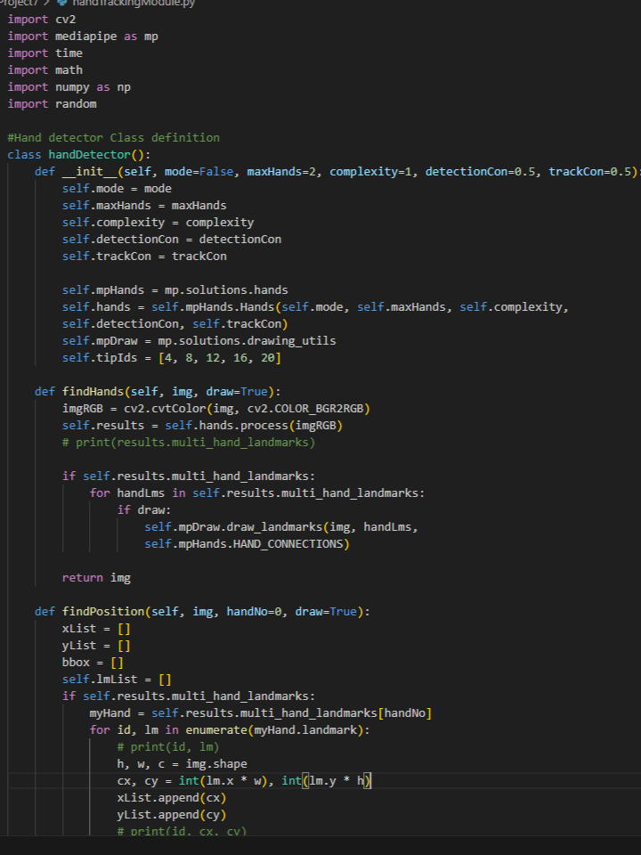
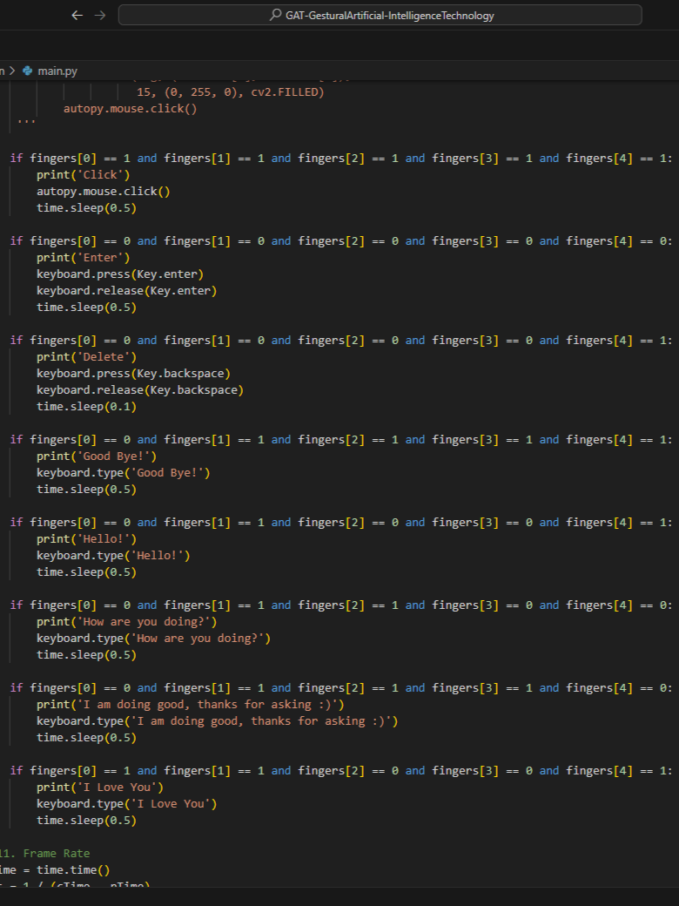

GAT
Gestural Artificial-Intelligence TechnologyJavascript application used to detect sign language
Winner of the "Freshmen Challenge" and "Gestural Interface for Web Design" at Philly Codefest 2022
Developed using Javascript, Tensorflow, OpenCV, Python, and React
We were able to use this to send messages through a mock social media website using sign language. My role was a backend developer who worked on getting the API set up and teaching the model some sign language. I was get our application to work with 4 different sign languages And hook it up to our mock website.
DEMO

Javascript hand tracking API code

Python hand tracking code

Actions coded using the Python API